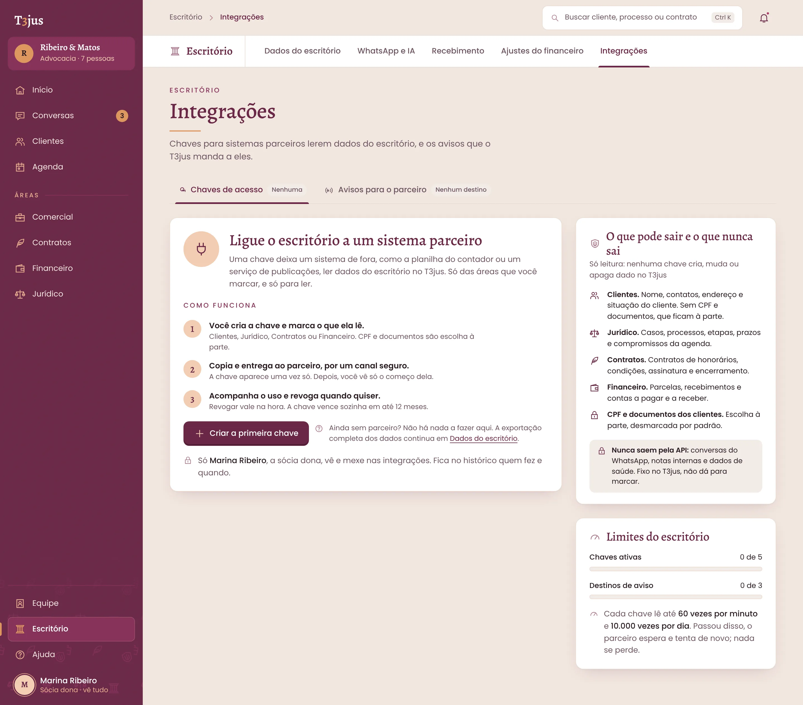
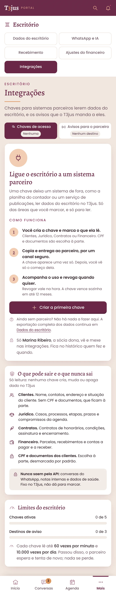

Nenhuma chave ainda
Como funciona em três passos, o que pode sair (as quatro áreas e, à parte, CPF e documentos) e o que nunca sai (conversas do WhatsApp, notas internas, dados de saúde). Os limites aparecem zerados.
Abrir: integracoes.html?estado=vazio (estreite a janela para ver o celular)